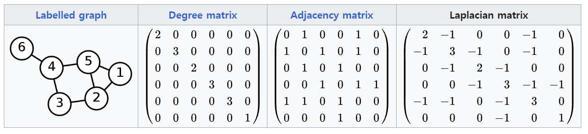

[GNN] Laplacian matrix
Laplacian Matrix
GNN
ref
https://en.wikipedia.org/wiki/Laplacian_matrix
https://process-mining.tistory.com/157
https://ok-lab.tistory.com/169
Laplacian matrix
unnormalized Laplacian
\[L=D-A\]
\[L^{sym}_{ij}=\begin{cases} d(v_i), \ i=j \\ -1, \ {v_i,v_j} \in E and i \neq j \\ 0, \ o.w \end{cases}\]
D: degree matrix, A: ajacency matrix
L: 미분,차분, 변동의 느낌..
- ex

- 특징
symmetric matrix (\(L=L^T\))
모든 vector x(dimesion 노드의 크기)에 대해 다음과 같은 특성을 지닌다. \(x^TLx=\frac{1}{2}\sum_{u \in {\cal V}}\sum_{v \in {\cal V}} A[u,v](X[u]-X[v])^2=\sum_{(u,v)\in {\cal \epsilon}} (X[u] - X[v])^2\)
symmetric normalized Laplacian
\[L^{sym}=D^{-\frac{1}{2}}LD^{-\frac{1}{2}}=I-D^{-\frac{1}{2}}AD^{-\frac{1}{2}}\]
Random walk Laplacian
\[L^{RW}=D^{-1}L=I-D^{-1}A\]
- \(L_{i,j}^{RW}:= \begin{cases} 1 & \text{if} i=j \text{and} \ deg(v_i) \neq 0 \\ -\frac{1}{deg(v_i)} & \text{if}\ i \neq j \ \text{and} \ v_j \text{is adjacent to}\ v_j \\ 0 & \text{o.w} \end{cases}\)